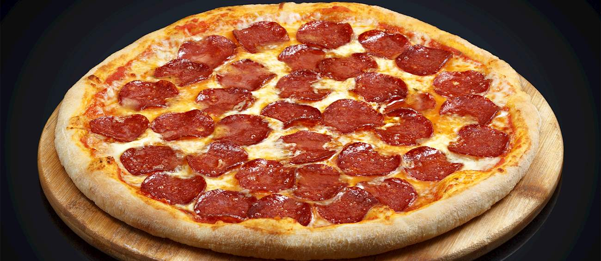

Pepperoni Pizza

Description
Quick, Easy and Delicious-Homemade pizza crust and tomato sauce has never been easier-and this recipe for pepperoni pizza produces a delicious classic!
Ingredients
- Rao's Tomato Sauce
- Pizza crust
- 1 (6 ounce) package pepperoni
- 1 cup shredded mozzarella cheese, or more to taste
Steps
- Preheat oven to 425 degrees F.
- Top crusts with sauce, pepperoni and cheese.
- Bake for 18 to 20 minutes until crusts are browned and cheese is bubbly. For best results, rotate pizza pans between top and bottom oven racks halfway through baking.